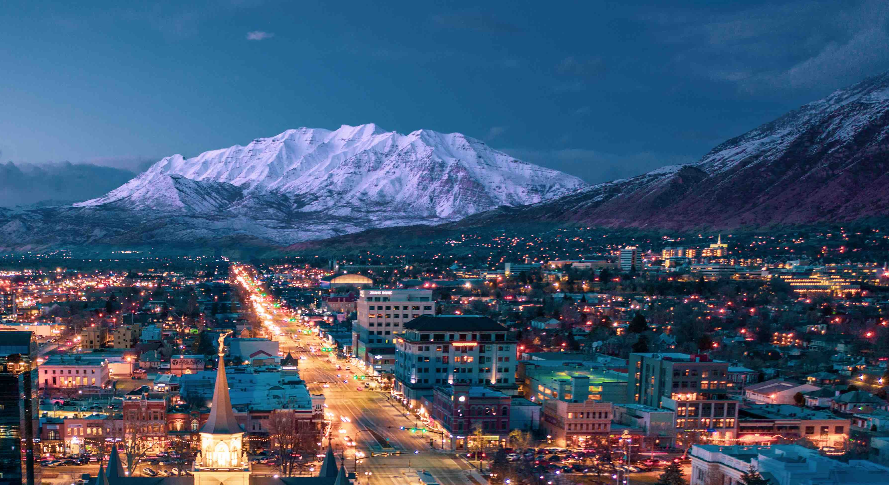

Emma Hilmo | WDD 130
Hello! My name is Emma Hilmo. I live in Utah, USA. I'm the second oldest and have 5 siblings.
Utah

Utah is a state in western United States. Salt Lake City is the state capital. It is the headquarters
to The Church of Jesus Christ of Latter Day Saints (LDS Church).